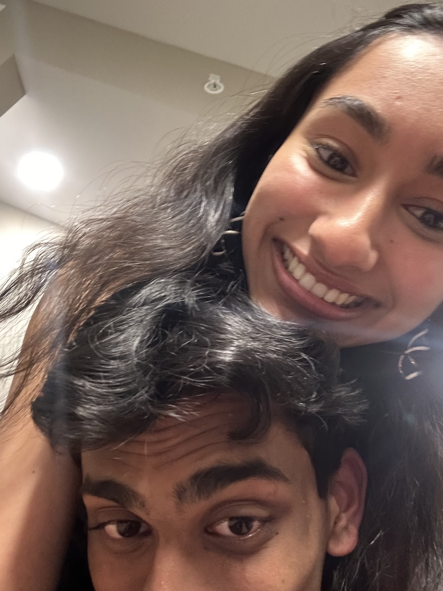
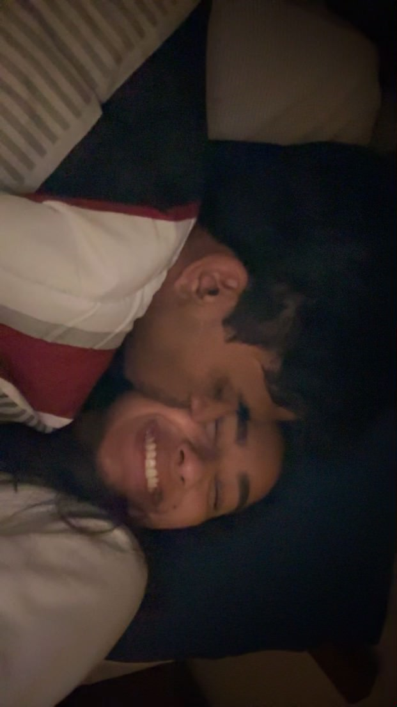
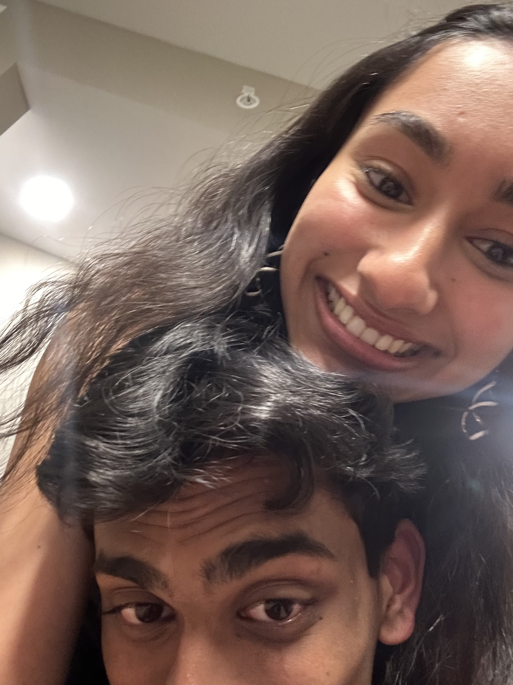
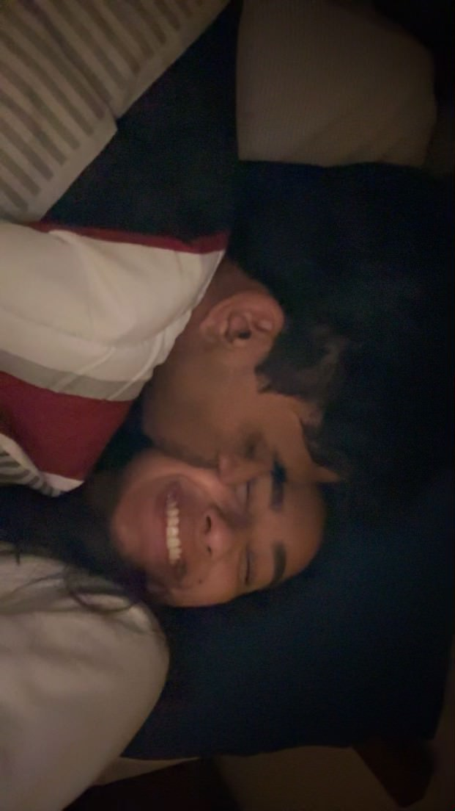
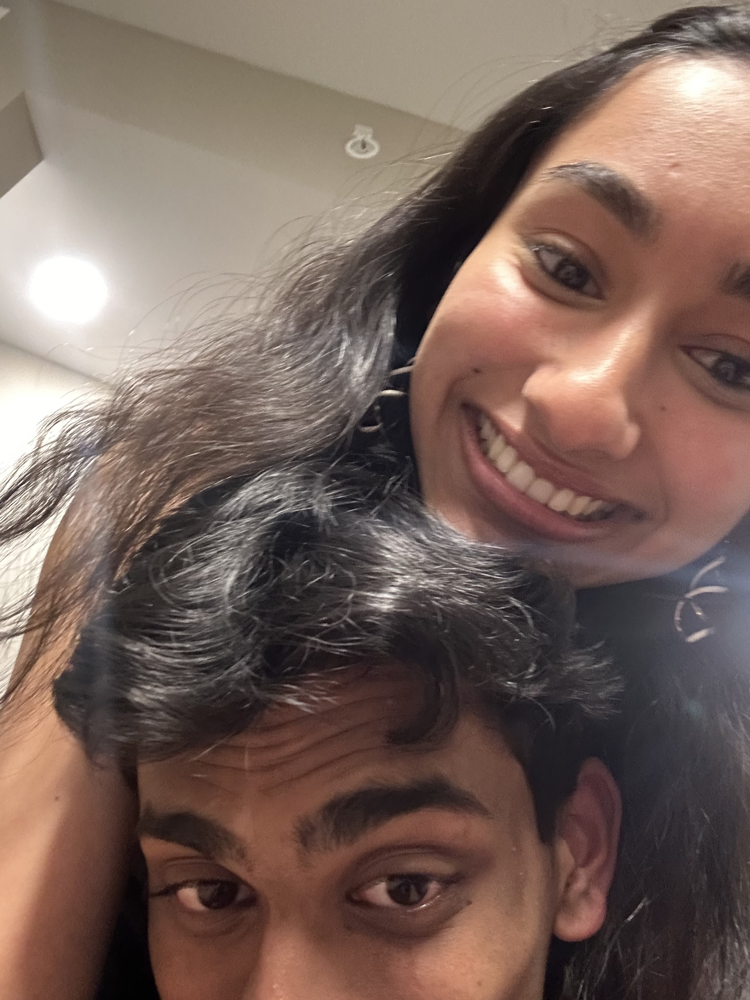
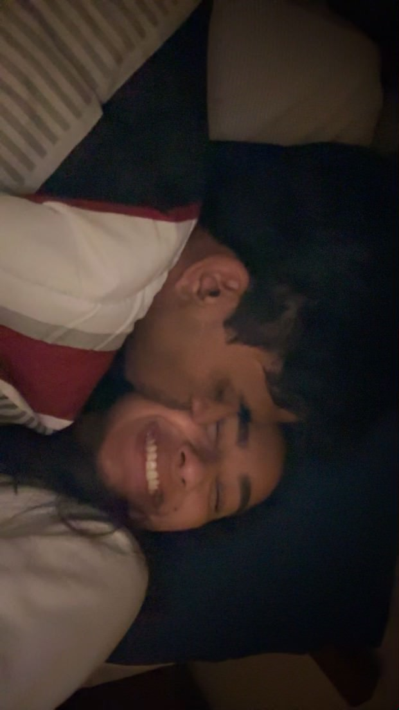

10 Days. Day two of my website. We are slowly inching closer to our one year anniversary. Everyday it feels more surreal. I never thought I would get here with someone, especially so soon. I honestly can’t wait for midnight to strike on February 13th. To finally, officially say that we have been together for a year. I have waited for this day for basically a year now lol. If you look back and remember our second month anniversary was the first time we were in person. We had this whole debacle on the day. Anyway if you remember it was the time we invented our walk near the river. We had dinner and then we were just walking and found the spot. Became a very iconic spot for our relationship. Can you believe that was almost 10 months ago. We were still in our freshman year of college. I was still living in Cary. You were basically homeless. Isn’t that genuinely crazy. I mean it’s insane to even look at how far our monthaversaries have come. Like we didn’t know what to do back then. I remember I was searching frantically at what to do around West Lafayette. Like this place is soo dead it makes it infinitely times harder. But finding that spot by the river was literally the greatest moment ever. It was soo perfect. It was secluded. Beautiful. Absolutely perfect. Getting terrified of every car that drove by. I mean there was everything you could imagine involved with that one spot. It was soo long ago too. Genuinely. It feels like ages ago. Like that spot by the river is just ingrained in our blood now. It’s almost a must go every time we walk by there. Like it’s a perfect place to go whenever we need a break or just some time to reflect. It’s literally a normal part of our routine if we ever go that way. Now we can also add the bridge to that. Still a very sketchy area. That will never ever change unfortunately. But It has really been a staple part for our relationships. I just absolutely love that spot. It holds a lot of value. It’s super nostalgic. It’s just amazing. If you also remember it was during this month that we first exchanged our “I love you”. A very eventful month if you think about it. A lot happened. A month which progressed our relationship. A month that gave us a lot of memories. Something else major also happened. I’m not going to say it but I’m sure you remember what it is. Anyway I love you soo much. To the end of the universe and back. Forever. Always.

